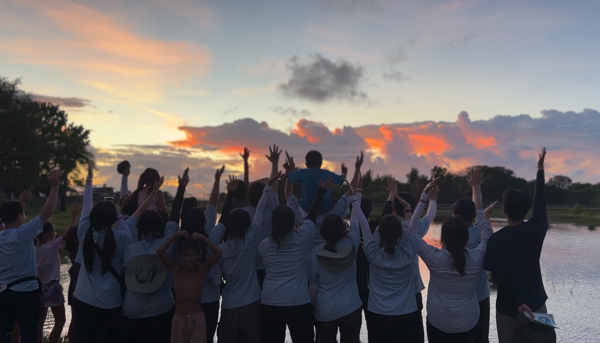
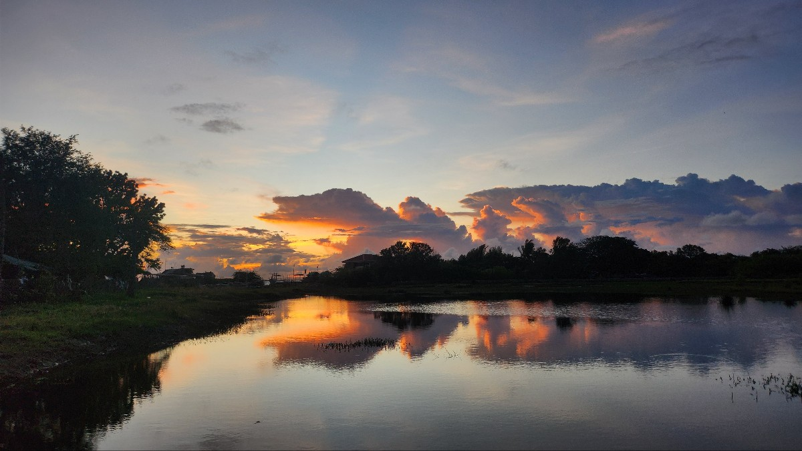
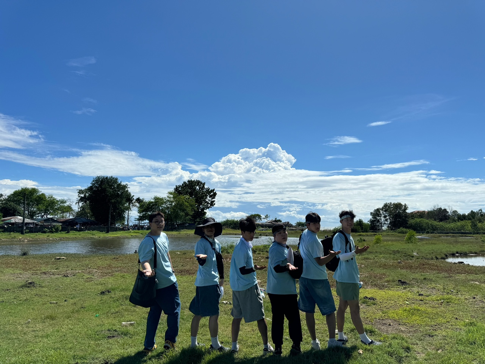
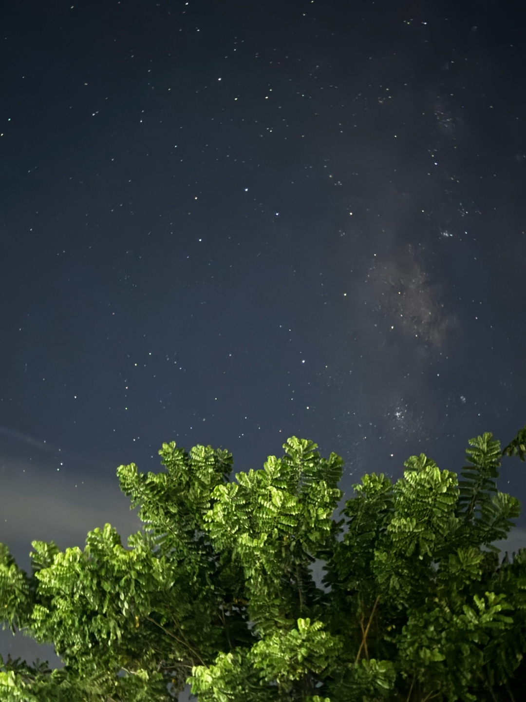
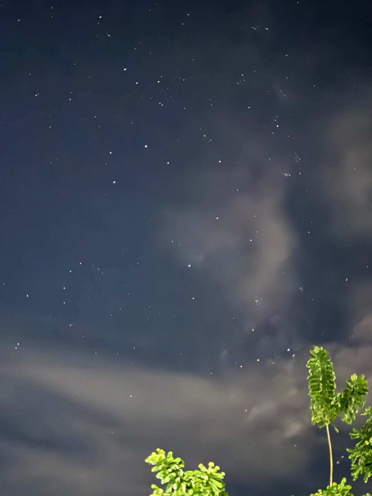

필리핀의 아름다운 풍경
  필리핀 여행에서 가장 인상 깊었던 것은 맑고 파란 하늘과 붉게 물든 아름다운 노을이었습니다. 끝없이 펼쳐진 푸른 하늘은 마치 바다처럼 깊고 고요했고, 해가 지면서 붉게 물들어 가는 노을은 하루의 마지막을 화려하게 장식해 주었습니다. 그 아래에서의 여유로운 순간들이 아직도 마음에 남아 있습니다.

태풍이 지나간 뒤라 바다는 조금 탁했지만, 그 위로 여러 작은 배들이 떠다니는 모습이 인상적이었습니다. 무엇보다도 지평선 너머로 펼쳐진 풍경은 정말 아름다워서, 한참을 바라보게 만들었습니다.
|  |  |  |
|---|---|---|
|
||
|
밤하늘에 무수히 빛나는 별들은 한국에서 쉽게 볼 수 없는 경관이었습니다. 그 멋진 별들과 선명하게 보이는 별자리에 완전히 빠져들어, 하늘을 올려다보며 친구들과 다양한 이야기를 나누었습니다. 별빛 아래에서의 그 시간들은 참 특별하게 느껴졌습니다.